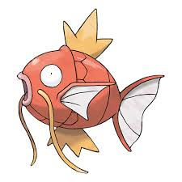

Magikarp es un Pokémon de tipo agua introducido en la primera generación. Es conocido por ser uno de los Pokémon más débiles y menos útiles en combate, pero tiene la capacidad de evolucionar en Gyarados, un Pokémon mucho más poderoso.
 Volver a la página principal